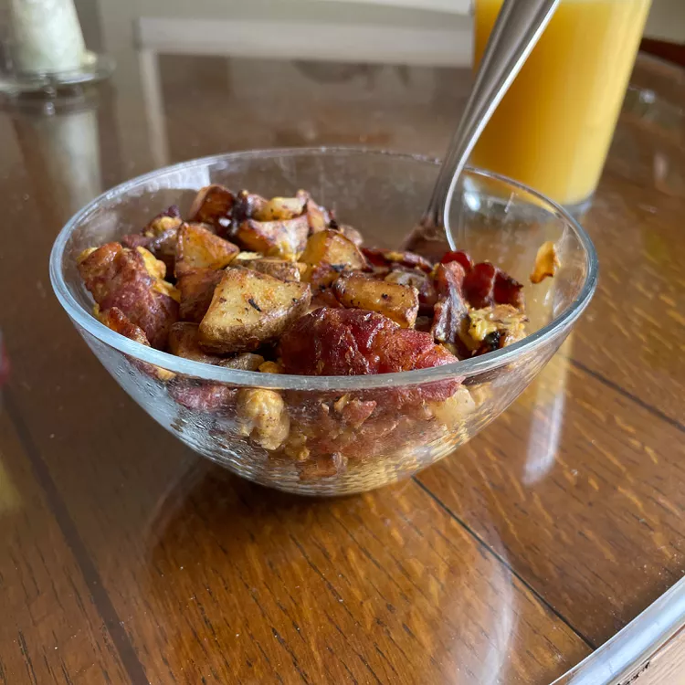

Campfire Breakfast

Description
This camp breakfast idea is a good way to start a cold day in the morning, camping or otherwise.
Ingredients
- 6 slices bacon, cut crosswise into 1/4-inch pieces
- 1 tablespoon olive oil
- 2 white potatoes, cubed
- salt and ground black pepper to taste
- 1 onion, chopped
- 4 large eggs, beaten
Steps
- Cook and stir bacon in a large skillet over medium heat until crispy, about 5 minutes. Transfer to a paper towel-lined plate to drain, discarding most of the grease.
- Add olive oil to the same skillet over medium heat. Add potatoes, salt, and pepper; cook and stir until browned and somewhat crispy, about 10 minutes.
- Mix onion into potatoes and cook until onion is translucent, about 5 minutes. Return bacon to the skillet; cook and stir until heated through, 1 to 2 minutes.
- Pour beaten eggs over potato mixture; cook and stir until eggs are set, 5 to 6 minutes.